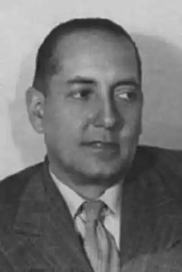

Алехо Карпентьєр і Вальмонт (26 грудня 1904 — 24 квітня 1980) — кубинський письменник, журналіст, музикант і музикознавець.
Син російської викладачки Ліни Вальмонт та французького архітектора, по материнській лінії — далекий родич Костянтина Бальмонта. Виріс на Кубі. У 12-річному віці приїхав із сім'єю до Парижа, вивчав там теорію музики. Повернувшись на Кубу, навчався архітектури, але курсу не закінчив. У 1923 році увійшов до авангардного об'єднання "Група меншини", фактично керівником якого був історик Еміліо Роіг де Леучсенрінг. 1924 року почав публікуватися в лівій пресі. У тому ж 1924 став головним редактором літературно-публіцистичного журналу "Картелес", а 1927 року очолив журнал "Revista de avance". Був пов'язаний з Комуністичною партією Куби, в 1927 за виступ проти диктатури Мачадо був на сім місяців ув'язнений, потім в 1928 за підтримки Робера Десноса, з яким познайомився в Гавані, таємно емігрував до Франції.
У Франції Карпентьєр познайомився із сюрреалістами, публікувався у бретонівському журналі "Сюрреалістична революція", був близьким з такими великими композиторами, як Даріус Мійо та Ейтор Віла-Лобос. 1930 року підписав антибретонівський памфлет "Труп". У 1933 році закінчив свій перший роман "Ecué-Yamba-Ó!" і незабаром виїхав із Франції до Мадриду. Зблизився з Мігелем Анхелем Астуріасом, чий інтерес до доколумбової міфології Латинської Америки глибоко вплинув на Карпентьєра. У 1937 брав участь у антифашистському конгресі письменників у Мадриді (у цей час країни йшла громадянська війна). У 1939 році Карпентьєр знову повернувся на Кубу, займався журналістикою та вивченням кубинської ритуальної та фольклорної музики. У 1943 році Карпентьєр відвідав Гаїті. Враження від цієї поїздки стали основою історичного роману "Царство земне". Роман воскресає епізоди правління на Гаїті Анрі Крістофа, колишнього раба, який бився за визволення країни від французьких колонізаторів і проголосив себе королем. Роман — під безперечним впливом афрокубінської міфології та мистецтва бароко, з одного боку, і сюрреалістів, їхньої філософії чудового у повсякденному, з іншого, — окреслив прихід "магічного реалізму" до латиноамериканської словесності. Цей феномен (активним соратником Карпентьєра тут був Астуріас) багато в чому визначив у 1950-1960-х роках вибух світового інтересу до латиноамериканського роману. У 1945-1959 роках Карпентьєр жив у Венесуелі. У цій країні відбувається дія його роману "Втрачені сліди" (1953), герой якого, сучасний композитор, здійснює подорож до сельви у пошуках музичних інструментів і в результаті докорінно змінює своє життя. У 1962 році Карпентьєр видав історичний роман "Століття освіти", дія якого відбувається в роки Великої Французької революції на Кубі, на Гаїті, у Франції, на Гваделупі, у Французькій Гвіані, в Іспанії. Герої роману, Естебан, Карлос та Софія — троє молодих кубинців із Гавани. В основі роману лежать справжні факти з життя Віктора Півдня – комісара якобінського Конвенту на Гваделупі, агента Директорії у Французькій Гвіані. Габріель Гарсіа Маркес після прочитання роману Карпентьєра повністю переробив свої "Сто років самотності". Карпентьєр повернувся на Кубу після перемоги революції, взяв активну участь у культурному житті країни. Став професором Гаванського університету, а 1962 року — директором Національного видавництва. З 1966 року обіймав посаду аташе з культури посольства Куби в Парижі. Роман "Зворотності методу" (1974) — один із портретів латиноамериканського диктатора, поряд із романами "Сеньйор Президент" Астуріаса, "Осінь патріарха" Гарсіа Маркеса, "Я, Верховний" Роа Бастоса. Останній роман Карпентьєра "Весна священна" (1978) названий на ім'я балету І. Стравінського. Роман є широкою епопеєю, що охоплює події XX століття, від громадянської війни в Іспанії до революції на Кубі. Карпентьєр, колишній поціновувачем та знавцем музики, також написав есе "Музика Куби", в якій особлива увага приділяється афрокубінським компонентам культури острова. Помер 24 квітня 1980 року у Парижі. Похований у Гавані на цвинтарі Колон.